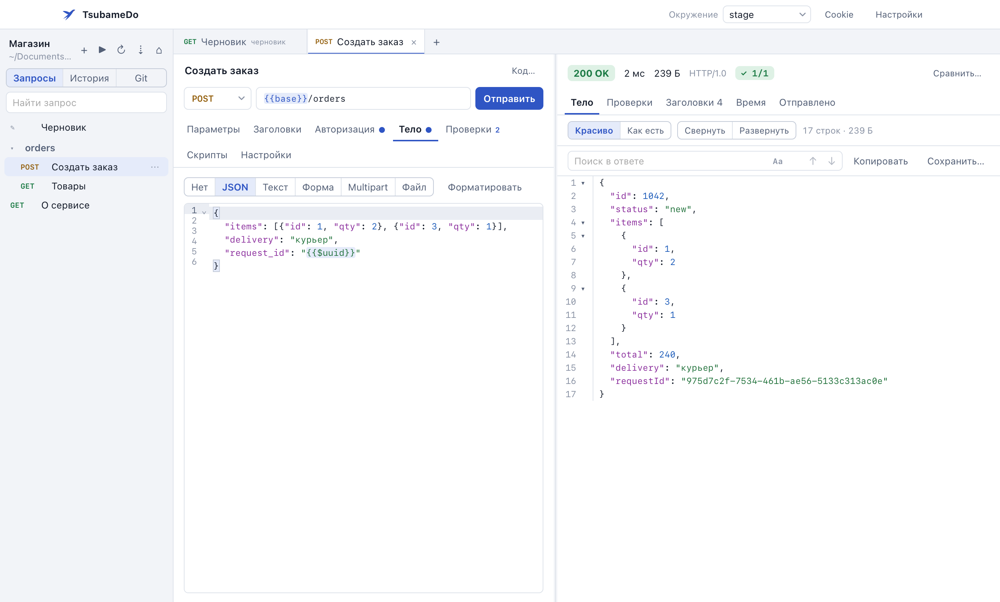
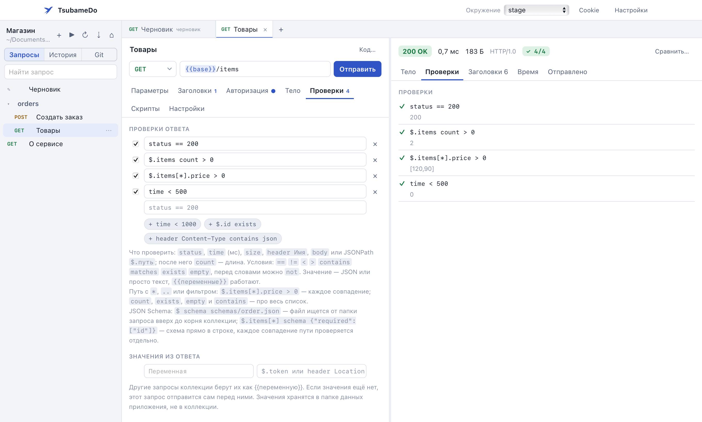
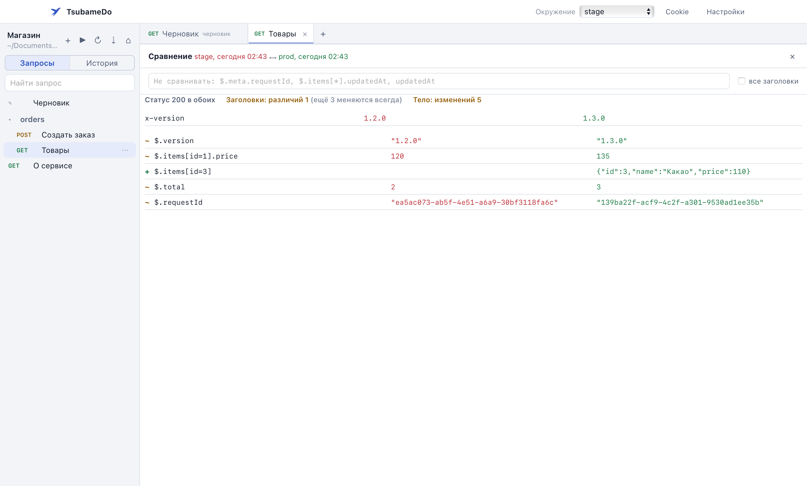
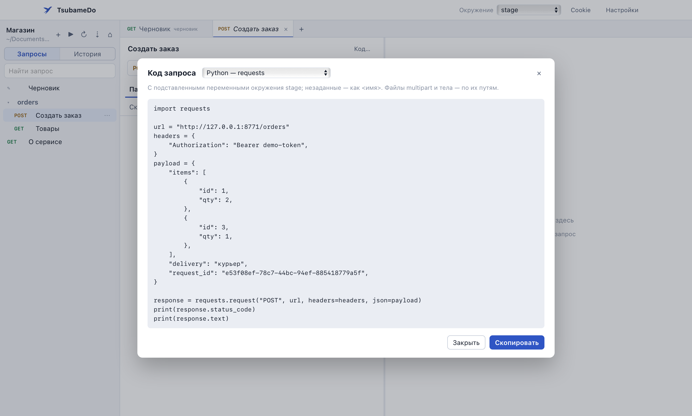

Коллекции в git
Каждый запрос лежит в своём TOML-файле. При сохранении меняются только строки, которые вы правили, так что диффы остаются чистыми. Пароли и токены можно вынести в *.local.toml, в git они не попадут.
Отправляйте запросы, проверяйте ответы и храните коллекции в git вместе с кодом. Окно открывается за секунду, ответ на сотни мегабайт листается без задержек. Регистрироваться не нужно.
Бесплатно, для macOS, Windows и Linux.

Мне надоело, что Insomnia долго запускается, зависает на больших ответах и просит завести аккаунт, чтобы отправить запрос. Хотелось программу, которая открывается сразу, спокойно показывает JSON на сотни мегабайт и хранит всё в обычных файлах. Так появился TsubameDo.
Каждый запрос лежит в своём TOML-файле. При сохранении меняются только строки, которые вы правили, так что диффы остаются чистыми. Пароли и токены можно вынести в *.local.toml, в git они не попадут.
Ответ больше 8 МБ пишется во временный файл, а не в память. JSON на 263 МБ скачивается за четверть секунды и занимает около 30 МБ. Поиск и фильтр по JSONPath работают по всему ответу.
Строка [capture] token = '$.token' достаёт токен из ответа, и остальные запросы пишут просто {{token}}. Если токена ещё нет, вход отправится сам. Проверки пишутся по одной на строку: status == 200.
Можно запускать JavaScript до и после запроса. Тесты из Postman и Insomnia с pm.test, pm.expect и CryptoJS работают без переделки.
Переносит коллекции и окружения из Insomnia и Postman, читает OpenAPI 3, Swagger 2 и HAR из браузера. Команду curl достаточно вставить в строку адреса.
OAuth 2.0 со входом через браузер, Digest, отдельные cookie для каждого окружения. Работает через системный прокси и SOCKS5, поддерживает клиентские сертификаты.
Отправьте запрос на stage и prod и посмотрите, чем ответы отличаются. JSON сравнивается по содержимому, а не построчно, и у каждого отличия виден путь.
Готовый код для curl, Python, JavaScript, Go, Java, C#, PHP и ещё десятка языков. Переменные уже подставлены.


id, поэтому новый товар в середине списка не сдвигает остальные.
| macOS 12+ | Apple Silicon (M1 и новее) | Intel |
|---|---|---|
| Windows 10, 11 | Установщик x64 | |
| Linux | AppImage x86_64 · .deb | AppImage ARM64 · .deb |
| CLI | macOS Apple Silicon · macOS Intel · Windows · Linux x86_64 · Linux ARM64 | |
Программа не подписана сертификатами Apple и Microsoft, поэтому при первом запуске система предупредит, что не знает автора. Подтвердить нужно один раз.
На macOS 12–14 проще: правой кнопкой по TsubameDo в «Программах», затем «Открыть».
Можно и через Терминал: xattr -dr com.apple.quarantine /Applications/TsubameDo.app
Окну нужен WebView2. В Windows 10 и 11 он обычно уже есть, а если нет, установщик скачает его сам.
chmod +x TsubameDo-*.AppImage и запустите.sudo apt install ./tsubamedo_*.debНужен WebKitGTK 4.1, он есть в Ubuntu 22.04, Debian 12, Fedora 38 и новее.
Посчитайте сумму и сравните её с файлом .sha256 со страницы выпуска.
На Mac это shasum -a 256 ~/Downloads/TsubameDo-*.dmg, на Linux sha256sum,
в Windows Get-FileHash.
Те же коллекции можно запускать из командной строки: с проверками, цепочками и отчётом JUnit, который понимают GitLab, Jenkins и GitHub Actions. Файл, скачанный через curl, macOS не блокирует.
# Mac на Apple Silicon. Для Intel и Linux возьмите имя архива со страницы выпуска curl -L https://github.com/asqd/tsubamedo/releases/latest/download/tsubamedo-ВЕРСИЯ-macos-apple-silicon.tar.gz | tar xz sudo mv tsubamedo /usr/local/bin/ tsubamedo run -e stage --junit report.xml # вся коллекция, код выхода для CI tsubamedo compare orders/list -e stage --with prod tsubamedo code orders/create -l python-requests
Регистрироваться не нужно, и программа ничего не отправляет разработчику. Коллекции лежат в папке, которую вы выбрали, а история, cookie и токены хранятся на вашем компьютере. В сеть уходят только запросы, которые отправляете вы.